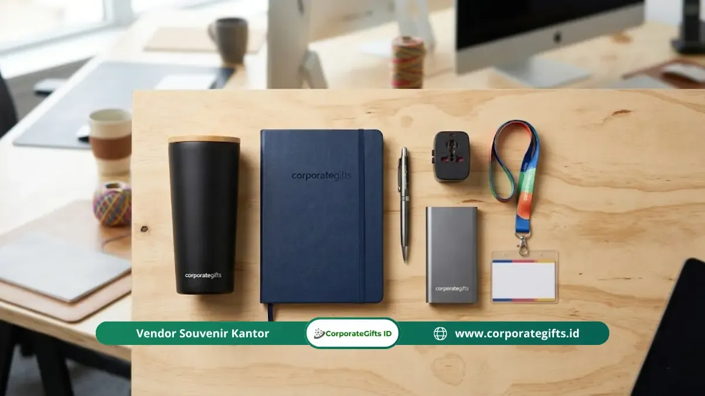

Corporate Gifts ID - Goodie bag seminar korporat adalah paket souvenir berisi kombinasi item fungsional, materi acara, dan merchandise branded yang dibagikan panitia kepada peserta seminar, konferensi, atau pelatihan perusahaan. Isi paket ini umumnya mencakup alat tulis, tumbler atau tote bag berlogo, serta modul materi seminar, dengan anggaran berkisar Rp50.000 hingga Rp500.000 per paket tergantung skala acara. Goodie bag yang dirancang tepat berfungsi sebagai media branding sekaligus bentuk apresiasi yang memperkuat kesan profesional perusahaan di mata peserta.
Poin Kunci Goodie Bag Seminar Korporat:
- Media Branding Fisik: Berfungsi ganda sebagai sarana promosi jangka panjang dan bentuk apresiasi nyata bagi peserta.
- Kurasi Item Fungsional: Mengutamakan barang dengan kegunaan harian tinggi seperti pulpen metal, tumbler stainless, dan notebook agenda.
- Fleksibilitas Anggaran: Alokasi biaya berkisar antara Rp50.000 hingga Rp500.000+ per paket sesuai tingkatan peserta (reguler, VIP, eksekutif).
- Kualitas Custom Branding: Presisi cetak logo (sablon, UV print, laser grafir) menentukan citra profesional penyelenggara.
Apa Itu Goodie Bag Seminar Korporat?
Goodie bag seminar korporat adalah kantong atau kotak berisi kumpulan item pilihan yang diberikan kepada peserta seminar bisnis, konferensi, atau pelatihan perusahaan sebagai bentuk apresiasi dan media branding.
Berbeda dengan souvenir biasa, goodie bag seminar korporat dirancang secara strategis untuk mencerminkan identitas merek perusahaan sekaligus memberikan nilai nyata bagi penerimanya. Setiap item yang dipilih umumnya mempertimbangkan relevansi tema acara, kegunaan jangka panjang, dan kemampuan mempertahankan ingatan peserta terhadap brand penyelenggara.
Goodie bag seminar korporat digunakan dalam berbagai jenis acara, mulai dari seminar internal karyawan, konferensi klien, peluncuran produk, hingga forum industri multi-nasional. Skala acara, segmen peserta, dan tujuan komunikasi perusahaan menjadi faktor utama yang menentukan isi dan desain paket ini.
Mengapa Goodie Bag Seminar Korporat Penting untuk Perusahaan?
Goodie bag seminar korporat penting karena merupakan media branding fisik yang dibawa pulang peserta, memperpanjang dampak komunikasi perusahaan jauh setelah acara selesai.
Menurut survei Promotional Products Association International (PPAI), sekitar 83 persen penerima barang promosi berlogo perusahaan mengingat nama brand pengirimnya hingga lebih dari dua tahun setelah menerimanya. Data ini menunjukkan bahwa investasi pada goodie bag seminar korporat memiliki nilai recall yang sangat tinggi dibandingkan banyak media periklanan digital yang mudah terlewatkan.
Selain fungsi branding, goodie bag seminar korporat juga memberikan serangkaian manfaat strategis berikut:
- Meningkatkan Reputasi Profesional: Menunjukkan kesungguhan dan standar tinggi perusahaan dalam menyelenggarakan acara berkelas.
- Membangun Engagement Peserta: Menciptakan antusiasme dan rasa dihargai sejak menit pertama peserta melakukan registrasi.
- Media Komunikasi Terpadu: Menyalurkan pesan korporat dan materi pelatihan secara terstruktur melalui modul cetak di dalam paket.
- Memicu Word-of-Mouth Organik: Mendorong peserta menggunakan merchandise berlogo di tempat kerja, kampus, atau ruang publik.
- Memperkuat Retensi & Loyalitas: Menciptakan ikatan emosional positif bagi peserta forum tahunan maupun mitra bisnis.

Kombinasi isi goodie bag seminar profesional: tumbler hitam aksen bambu, notebook agenda, pulpen metal, travel adaptor, powerbank, dan lanyard ID card.
Apa Saja Isi Goodie Bag Seminar Korporat yang Ideal?
Isi goodie bag seminar korporat yang ideal mencakup item fungsional yang relevan dengan tema acara, mengandung identitas merek yang elegan, dan memberikan nilai guna nyata bagi peserta seminar. Berikut adalah 4 kategori isi utama yang umum digunakan dalam paket seminar kit profesional:
1. Item Fungsional Harian
Item fungsional adalah fondasi utama paket seminar kit karena digunakan berulang kali oleh penerima dalam aktivitas kantor sehari-hari:
- Pulpen Branded Berkualitas: Pulpen metal dengan grafir laser nama atau logo instansi.
- Buku Catatan / Notepad Agenda: Notebook agenda kulit custom bersampul PU leather atau blocknote spiral A5.
- Tumbler Stainless Steel: Tumbler vacuum insulated SUS 304 tahan panas dan dingin 12-24 jam.
- Tote Bag Kanvas Premium: Tote bag kanvas premium berbahan kain tebal atau blacu dengan sablon presisi.
- Powerbank Custom: Gadget pendukung daya portabel 10.000 mAh dengan fast charging untuk seminar multi-hari.
2. Materi Seminar dan Edukasi
Materi seminar berfungsi sebagai konten edukatif sekaligus kenang-kenangan intelektual bagi peserta:
- Modul atau handbook materi pelatihan eksklusif.
- Lembar susunan acara, biodata narasumber (speaker profile), dan barcode materi cloud.
- Flashdisk kartu custom berisi salinan digital presentasi pembicara.
3. Item Promosi dan Branding Tambahan
Item pelengkap yang secara langsung membawa identitas visual acara:
- Tali lanyard printing tisu halus dan kartu identitas peserta (ID card).
- Stiker die-cut matte, pin enamel eksklusif bertema acara, atau gantungan kunci akrilik.
- Voucher diskon khusus atau kupon akses program lanjutan bagi peserta.
4. Makanan Ringan atau Minuman Kemasan
Pilihan yang semakin populer dalam seminar modern untuk menjaga energi peserta: sajian snack sehat artisan, biskuit gandum kemasan elegan, atau botol infused water berlabel khusus acara.
Tabel Rekomendasi Alokasi Anggaran Goodie Bag Seminar Korporat
Anggaran goodie bag seminar korporat ditentukan berdasarkan jumlah peserta, tingkatan acara, dan tujuan branding perusahaan, dengan kisaran umum antara Rp50.000 hingga Rp500.000+ per paket. Berikut tabel panduan alokasi anggaran:
| Skala & Level Acara | Kisaran Anggaran / Paket | Komposisi Item Rekomendasi | Target Peserta |
|---|---|---|---|
| Paket Basic / Internal | Rp50.000 - Rp100.000 | Tote bag spunbond/blacu, blocknote A5 spiral, pulpen sablon, lanyard printing, snack box. | Pelatihan staf internal, workshop umum, event kampus. |
| Paket Standard / Korporat | Rp100.000 - Rp250.000 | Tote bag kanvas premium, agenda softcover PU, tumbler stainless SUS 304, pulpen metal grafir, flashdisk kartu. | Seminar bisnis B2B, simposium nasional, gathering mitra. |
| Paket Executive / VIP | Rp250.000 - Rp500.000+ | Tas jinjing laptop PU leather / ransel custom, executive notebook organizer, smart LED tumbler, powerbank 10.000mAh, hardbox custom magnetik. | Narasumber utama, direksi, komisaris, delegasi internasional, tamu kehormatan. |
Kesalahan Umum dalam Menyiapkan Goodie Bag Seminar Korporat
Menyiapkan goodie bag seminar tanpa perencanaan matang kerap memicu kekecewaan peserta dan pemborosan anggaran. Berikut beberapa kesalahan fatal yang wajib dihindari panitia:
- Mengisi Paket dengan Barang Tidak Berguna: Goodie bag yang hanya berisi pernak-pernik murah tanpa fungsi praktis cenderung langsung dibuang seusai acara, membuat biaya promosi sia-sia.
- Kualitas Cetak Logo yang Buruk: Logo yang buram, miring, atau mudah terkelupas justru merusak citra profesionalitas perusahaan di hadapan mitra bisnis.
- Memesan Terlalu Mepet dengan Hari-H: Vendor membutuhkan waktu produksi 7 hingga 21 hari kerja. Pemesanan kilat seringkali mengorbankan tahap quality control (QC).
- Mengabaikan Kualitas Tas / Kemasan Luar: Tas goodie bag adalah impresi visual pertama. Kemasan berbahan tipis yang mudah sobek menurunkan persepsi nilai barang di dalamnya.
- Tidak Menyesuaikan Isi dengan Profil Peserta: Kebutuhan peserta eksekutif berbeda jauh dengan peserta pelatihan fresh graduate; pastikan item relevan dengan segmen audiens.
Proses dan Langkah Praktis Memesan Goodie Bag Seminar Korporat
Agar pengadaan berjalan lancar tanpa kendala teknis, ikuti 8 tahapan terstruktur berikut:
- Tentukan Konsep dan Tema Acara: Sesuaikan warna tema dengan pedoman identitas visual (brand guidelines) perusahaan.
- Susun Daftar Item Pilihan: Hitung estimasi kuantitas kebutuhan berdasarkan jumlah peserta terdaftar plus buffer 10 persen.
- Riset dan Seleksi Vendor Resmi: Pilih vendor berbadan hukum resmi yang menyediakan fasilitas invoice faktur pajak dan jaminan garansi.
- Minta Layout Preview Digital & Mockup 3D: Pastikan proporsi tata letak logo dan warna hex sesuai sebelum proses cetak.
- Review Sampel Fisik (Proofing): Lakukan uji raba material dan cek hasil cetakan sablon/grafir pada sampel produksi.
- Approval Produksi Massal: Terbitkan Surat Perintah Kerja (SPK) resmi dan jadwalkan timeline penyelesaian.
- Quality Control Ketat: Periksa kerapian jahitan tas, fungsi ritsleting, dan hasil cetak setiap item saat barang selesai diproduksi.
- Atur Logistik dan Distribusi: Pastikan paket tiba di lokasi acara minimal H-2 sebelum registrasi seminar dibuka.
Tips Memilih Vendor Goodie Bag Seminar Korporat Terpercaya
Vendor yang tepat adalah mitra strategis yang menjamin kelancaran acara Anda. Perhatikan kriteria seleksi berikut:
- Portofolio Korporat & Instansi Nyata: Periksa pengalaman vendor dalam menangani proyek B2B berskala ratusan hingga ribuan paket.
- Ketersediaan Sampel Fisik Gratis: Vendor profesional siap mengirimkan sampel bahan dan contoh produk jadi sebelum kesepakatan kontrak.
- Transparansi Rencana Anggaran Biaya (RAB): Harga penawaran sudah mencakup rincian biaya cetak, kemasan, dan pengiriman tanpa biaya tersembunyi.
- Fasilitas Layanan Desain Grafis: Membantu penataan layout logo perusahaan pada berbagai bentuk media merchandise.
- Garansi Purnajual dan Penggantian Cacat: Jaminan penggantian barang baru secara cepat jika ditemukan cacat produksi saat pengiriman.
Inspirasi Goodie Bag Berdasarkan Tema Acara
Berikut beberapa inspirasi padanan isi goodie bag seminar yang disesuaikan dengan fokus tema kegiatan:
- Seminar Kepemimpinan & Eksekutif: Hardbox magnetik, executive pen rollerball grafir nama, notebook agenda kulit PU, tumbler kopi stainless minimalis.
- Workshop Teknologi & Digital: Tas ransel laptop polyester, powerbank fast charging 10.000mAh, flashdisk kartu 32GB, mousepad ergonomis.
- Seminar Kesehatan & ESG Lingkungan: Tote bag kanvas organik, tumbler stainless aksen kayu bambu, sedotan/cutlery set stainless steel, snack bar sehat.
- Konferensi Nasional & Forum B2B: Goodie bag kanvas tebal beritsleting, map folder kulit, lanyard printing premium, blocknote spiral A5.
Pertanyaan Seputar Goodie Bag Seminar Korporat (FAQ)
Kesimpulan dan Rekomendasi Vendor
Goodie bag seminar korporat bukan sekadar pelengkap seremonial acara. Ketika dirancang dengan strategi yang matang, paket ini menjadi instrumen investasi branding jangka panjang yang terus menghadirkan nilai recall positif bagi reputasi perusahaan Anda. Kunci keberhasilannya terletak pada kurasi item fungsional, mutu cetak presisi, ketepatan waktu pengadaan, dan kemitraan dengan vendor terpercaya.
Konsultasikan kebutuhan goodie bag seminar korporat Anda bersama tim spesialis CorporateGifts.ID. Dapatkan penawaran harga resmi dan visual mockup gratis melalui formulir permintaan penawaran harga hari ini juga.